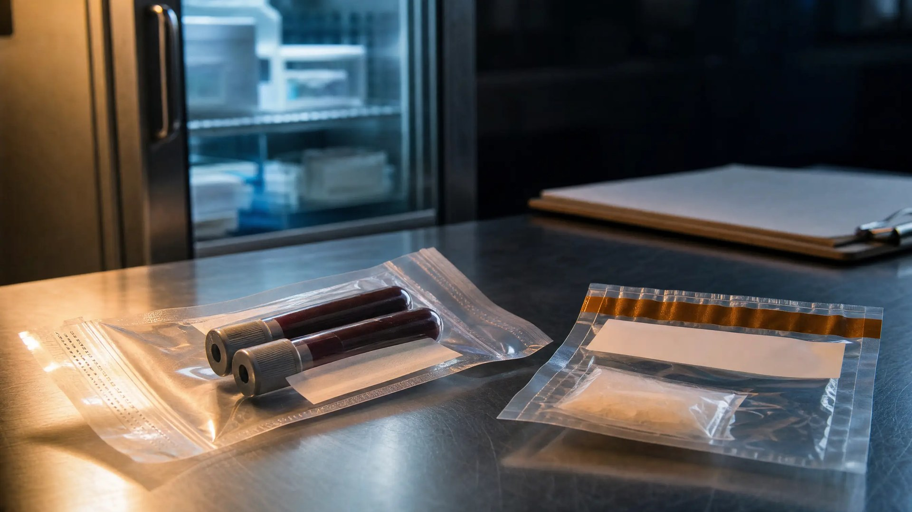

Florida Chain of Custody for Blood and Drugs

Chain of custody for blood and drug evidence is the record of who held a sample or seized substance at every step from the stop to the lab. In Florida, the State has to lay that chain, but a missing signature alone rarely keeps the exhibit out.
First, the defense has to point to evidence of probable tampering. Here is how the chain works, what a real gap looks like, and when to raise it.
What Does F.S. 90.901 Require?
F.S. 90.901 is Florida's authentication rule. Before an exhibit comes in, the party offering it must show enough to support a finding that it is what that party claims.
A witness can often recognize a phone or a knife on sight. A tube of blood or a bag of white powder looks like every other one. So the State usually authenticates it by showing an unbroken chain from collection to testing.
That burden belongs to the State, not to you. And missing proof can matter at trial, as we explained in our post on how missing evidence can create reasonable doubt in a DUI case.
Authentication Is a Separate Question
Chain of custody asks whether this is the same blood or the same substance taken in your case. Whether the lab tested it correctly is a different question. Both can matter, but they are attacked in different ways.
How Does Evidence Get From the Stop to the Lab?
In DUI cases, F.S. 316.1932 is Florida's implied consent law. It limits who may draw blood and requires testing by methods approved under FDLE rules.
Those rules are in Florida Administrative Code chapter 11D-8. Rule 11D-8.012 covers blood collection, labeling, preservation, and storage. The Florida Supreme Court found an older version inadequate in State v. Miles (2000), and the rule has since been amended. Any challenge should rely on the current text.
Drug cases follow a similar path. At each step, a record should exist:
- Collect and seal: Blood is drawn or drugs are seized and field-tested, then sealed and labeled. Record: draw documentation, seal numbers, initials, and time.
- Evidence locker: The item is booked into property, refrigerated if it is blood. Record: property receipt and locker log.
- Transport and intake: A courier or mail carries the item to the lab, which checks the seal and logs it in. Record: transfer log and intake notes.
- Analysis and storage: An analyst tests the sample, and the remainder is stored. Record: analyst notes, storage log, and temperature records.
The Orlando-area path has changed recently. WFTV reported on June 30, 2026, that FDLE opened a new Central Florida lab focused on toxicology, including impaired-driving cases. New intake, storage, and transfer steps mean new records to request.
FDLE says toxicology turnaround depends on regional transport time and specimen type. The longer blood sits, the more storage time and temperature matter.
Is a Missing Signature Enough to Exclude the Evidence?
Usually not. Since Peek v. State (Fla. 1980), Florida's rule has been that relevant physical evidence comes in unless there is an indication of probable tampering.
In Taplis v. State (Fla. 1997), the Florida Supreme Court said the defense must show a probability of tampering, not a mere possibility. A blank line on a form, standing alone, is often just a possibility.
Once the defense makes that showing, the burden shifts back. The State must then prove a proper chain or otherwise show no tampering occurred. The Court applied this framework in Murray v. State, 3 So. 3d 1108 (Fla. 2009).
What Does a Real Chain-of-Custody Gap Look Like?
Murray shows the difference. Two hairs were collected at the scene. By the time of testing, the count had grown to somewhere between five and twenty-one.
The State did not call two key custodians to explain the change. The Florida Supreme Court held that admitting the hair evidence was error. That is a real gap, not a clerical slip.
In blood and drug cases, the warning signs usually look like this:
- Undocumented time: Hours or days when no one signed for the item, often around shift changes, weekend locker storage, or mailing.
- Mismatched seals or initials: The seal number logged at collection does not match the one the lab reports receiving.
- Weight or volume changes: The lab's figure differs from what was recorded at seizure or draw. Weight also drives charging, as our post on why container weight cannot count toward Florida drug charges explains.
- Broken or resealed packaging: Intake notes describe a torn, retaped, or resealed bag.
- Storage problems: Blood that was not refrigerated, or sat for a long stretch without a temperature record.
- Missing transfer entries: A courier or mail step with no receipt on either end.
Problems Can Start Inside the Lab
This is older background, not current news. In 2014, CBS Miami reported that an FDLE chemist was accused of swapping prescription pills in evidence for over-the-counter pills. The chemist had handled about 2,600 cases from 80 agencies, and FDLE ordered a statewide review. The chain does not end at intake.
How Do You Raise a Chain-of-Custody Problem Before Trial?
Gaps do not surface on their own. The records usually come out only when the defense asks for them through discovery under Florida Rule of Criminal Procedure 3.220.
That means requesting property receipts, locker logs, transfer logs, lab intake notes, analyst notes, and temperature records. It also means deposing the custodians who actually handled the evidence.
If a real problem appears, a motion in limine asks the judge to exclude or limit the exhibit before trial. F.S. 90.403 also lets a court exclude evidence when unfair prejudice or confusion substantially outweighs its value.
Even if the exhibit comes in, the fight is not over. Weaknesses in the chain can still be argued to the jury. Lab reports and logs can also raise separate issues covered in our guide to hearsay in Florida criminal cases.
Key Takeaways
- Proving where blood or drug evidence has been is the State's burden.
- The defense must show probable tampering, not a technicality or mere possibility.
- The records only get produced if someone asks for them.
- Whether a gap matters depends on the facts of each case.
This article is general information, not legal advice for your case. Every chain-of-custody question turns on its own records and facts.
How a Criminal Defense Attorney Can Help
If you're facing DUI or drug charges in Orlando, an experienced defense attorney can check whether the State can account for the lab evidence at every step. As a former State Trooper and Deputy Sheriff, I understand how law enforcement builds these cases—and how to challenge them effectively.
Facing DUI and Drug Lab Evidence Charges?
If your DUI or drug case depends on a blood result or lab report, contact Lotter Law for a free consultation. We can review how that evidence was collected, stored, and documented before your trial date.
Contact Lotter Law at 407-500-7000 for a free consultation.

Jeff Lotter
Criminal Defense Attorney | Former State Trooper
Jeff Lotter is an Orlando criminal defense attorney and former Florida Highway Patrol trooper. He uses his law enforcement background to build stronger defenses for clients facing criminal charges.
Related Articles
Container Weight Cannot Be Counted in Florida Drug Charges | Blair v. State
The container holding drugs cannot be included in the trafficking weight under Florida law. This distinction can mean years of difference in…
DUI Acquittal: Missing Evidence Creates Reasonable Doubt
Jury acquitted our DUI client due to missing witnesses, no video, and evidence gaps. Learn how lack of evidence creates reasonable doubt in …
Motion in Limine in Florida Criminal Cases, Explained
Learn what a motion in limine does in a Florida criminal case: how it differs from a motion to suppress, what evidence it can exclude, and h…
Show Me the Contract: Challenging Inflated Restitution in Florida Criminal Cases
A victim's testimony alone isn't enough to prove restitution amounts in Florida. A 2025 appellate ruling strengthens defendants' rights to c…